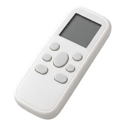
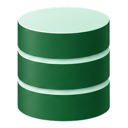

Controle original
do próprio aparelho


ESP32 clonadora
a única com receptor IR; no modo clone, captura sem parar

Biblioteca IR
no servidor, tabela protocolos_ir
- guarda as 20 capturas recentes da clonadora
- salvar dá nome à captura; o navegador manda o id, nunca o RAW
- failsafe OFF: a captura do botão de desligar, anexada ao protocolo
- só protocolo reconhecido vira protocolo da sala; RAW genérico é só testado e retransmitido

Ar-condicionado
não é medido

ESP32 da sala
transmite pelo protocolo aplicado; guarda o failsafe OFF na NVS
botão da placa por 5 s: transmite o failsafe OFF da NVS, sem servidor nem Wi-Fi